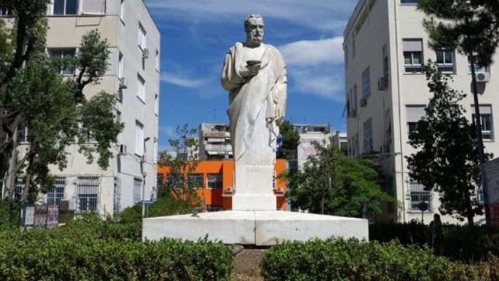

Contact Us
Contact the Palikaras Lab, led by Associate Professor Konstantinos Palikaras, at the Laboratory of Physiology "Physiologeion", Medical School, National and Kapodistrian University of Athens (NKUA), Greece. We welcome inquiries regarding research collaborations, scientific projects and opportunities to join our research team.
Palikaras Lab
Address
Laboratory of Physiology "Physiologeion"
Medical School
National and Kapodistrian University of Athens
75 Mikras Asias Street
Goudi, 115 27 Athens, Greece
Office Telephone
Department / Laboratory Secretariat
Department of Physiology
Find Us
NKUA Medical School Campus, Goudi, Athens
Our Campus

Medical School, National and Kapodistrian University of Athens, Goudi, Greece.